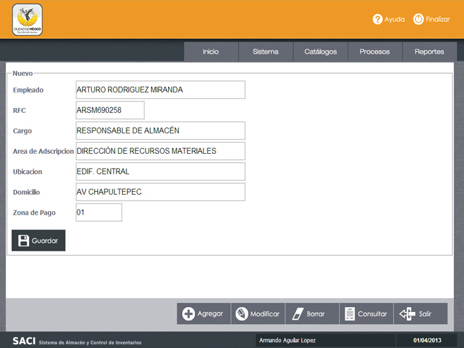
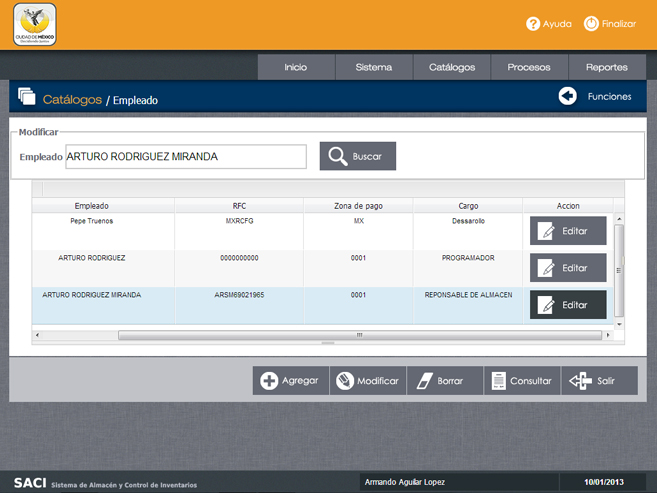
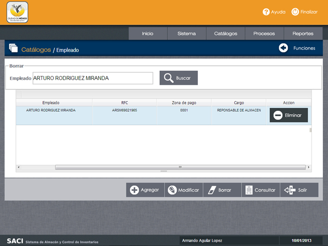
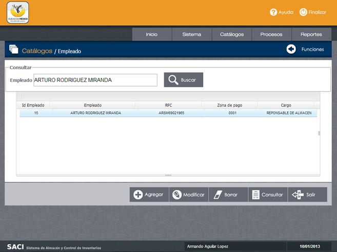

/ Catálogos / Empleado.


3.- Función Modificar.
Paso 4. Modifique los datos deseados y haga clic en "Guardar" para aplicar los cambios.
Paso 4. Modifique los datos deseados y haga clic en "Guardar" para aplicar los cambios.

4.- Función Borrar.
Paso 1. Haga clic en la opcion "Borrar".
Paso 2. Ingrese el nombre del empleado a buscar.
Paso 3. Una vez que se muestra el nombre del empleado, seleccione la opción "Eliminar" que se muestra delante del nombre.
Paso 1. Haga clic en la opcion "Borrar".
Paso 2. Ingrese el nombre del empleado a buscar.
Paso 3. Una vez que se muestra el nombre del empleado, seleccione la opción "Eliminar" que se muestra delante del nombre.

5.-0Función Consultar.
Paso 1. Haga clic en la opcion "Consultar".
Paso 2. Ingrese el nombre del empleado a buscar.
Paso 3. Revise los datos del empleado que se muestra en su pantalla.
Paso 1. Haga clic en la opcion "Consultar".
Paso 2. Ingrese el nombre del empleado a buscar.
Paso 3. Revise los datos del empleado que se muestra en su pantalla.
Objetivo.
Realizar funciones de Mantenimiento al Catálogo de Personal.
Realizar funciones de Mantenimiento al Catálogo de Personal.
1.- Función Agregar
Paso 1. Ingrese los datos que le solicita el sistema como: "Nombre, RFC, Cargo y Zona de Pago".
Paso 2. Haga clic en Guardar. Aparecerá el siguiente mensaje: "Registro guardado con éxito".
2.- Función Modificar.
Paso 1. Haga clic en la opción "Modificar".
Paso 2. Ingrese el nombre del empleado que desea modificar y haga clic en "Buscar".
Paso 3. Una vez que se muestra el empleado, haga clic en el botón "Editar" que se muestra delante de los datos.
Navegación.
Para volver al Menú y opciones de Catálogos utilice el botón "Funciones" o directamente el botón "Catálogos".